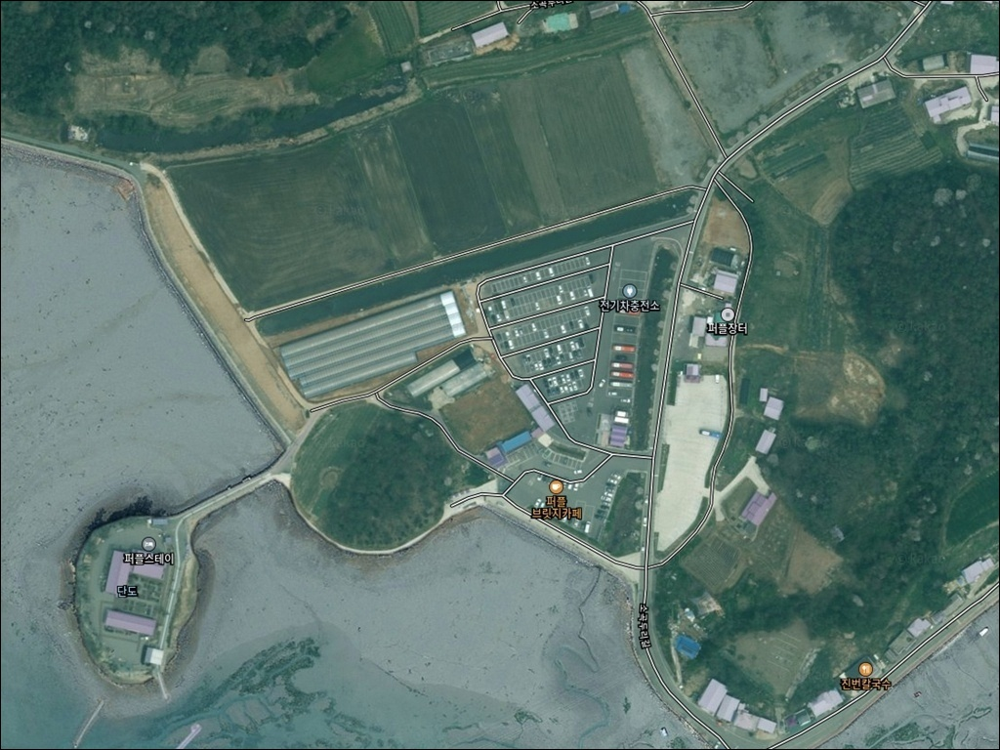
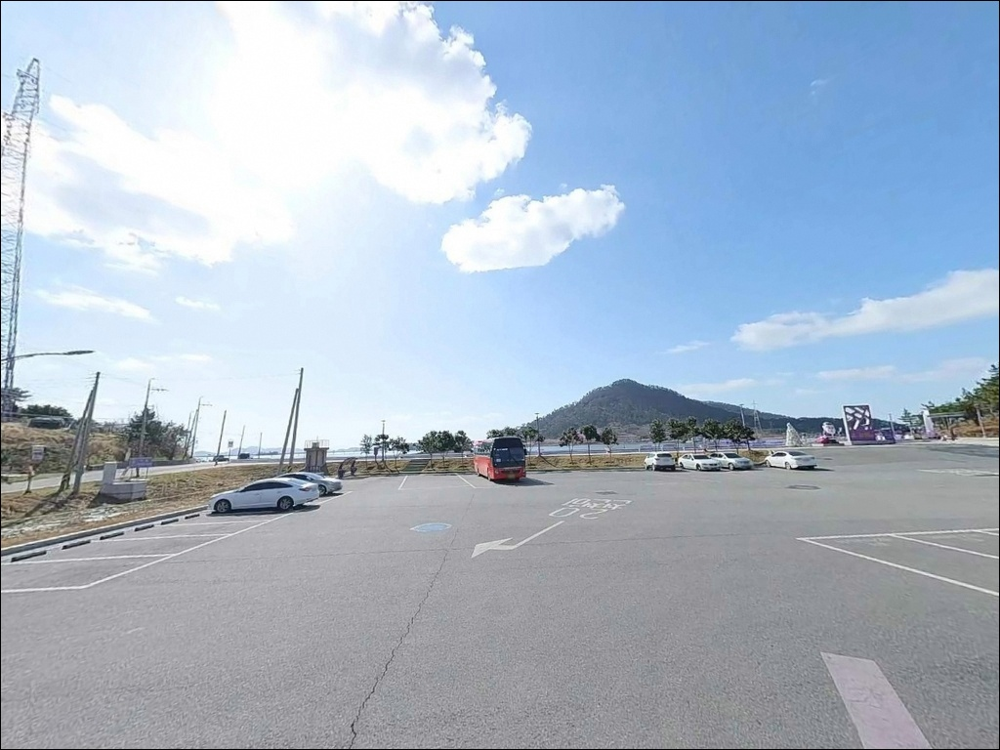
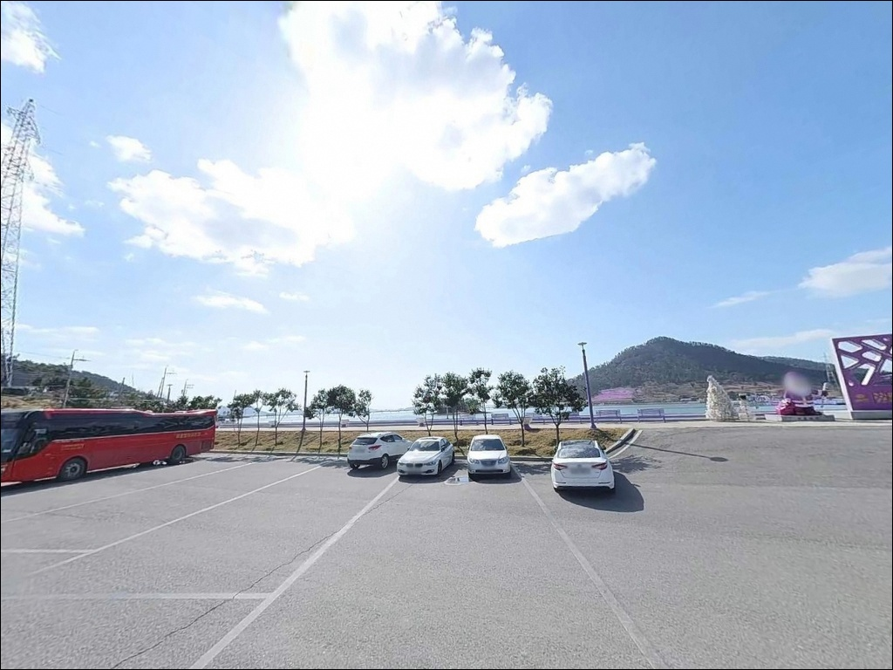
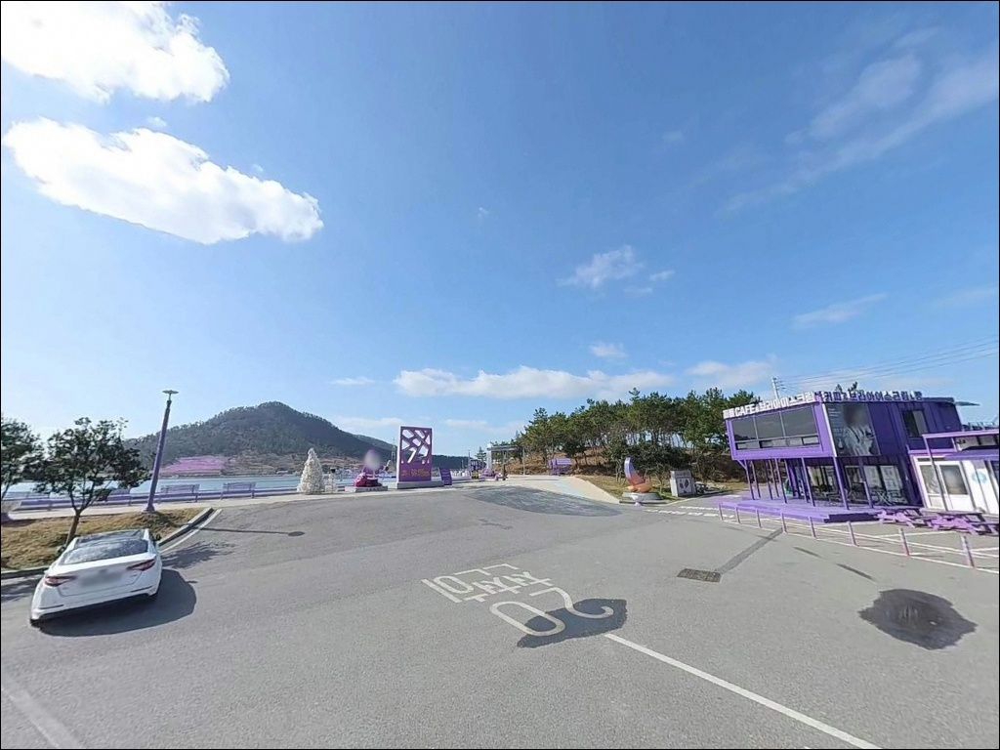
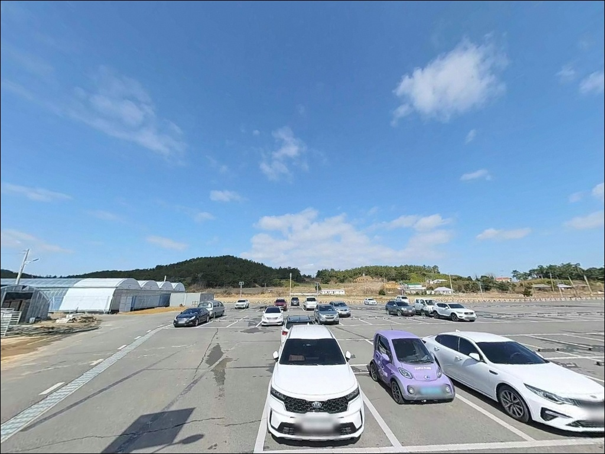
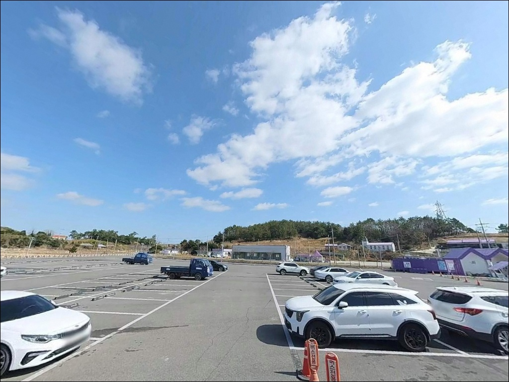
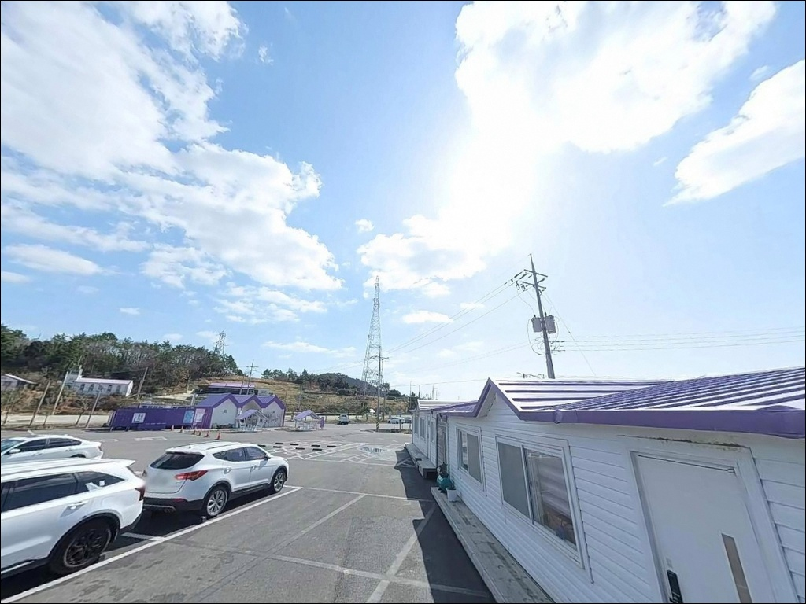
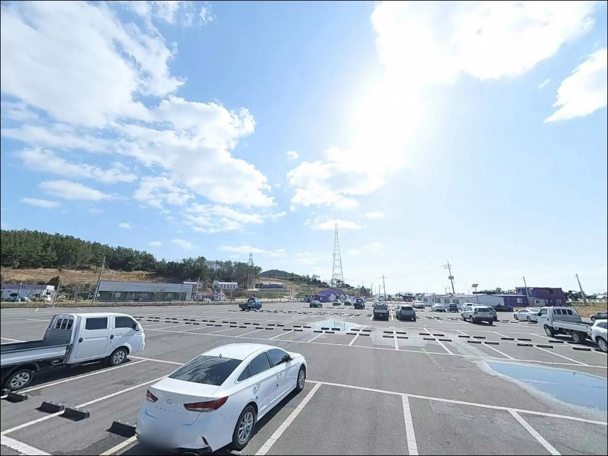
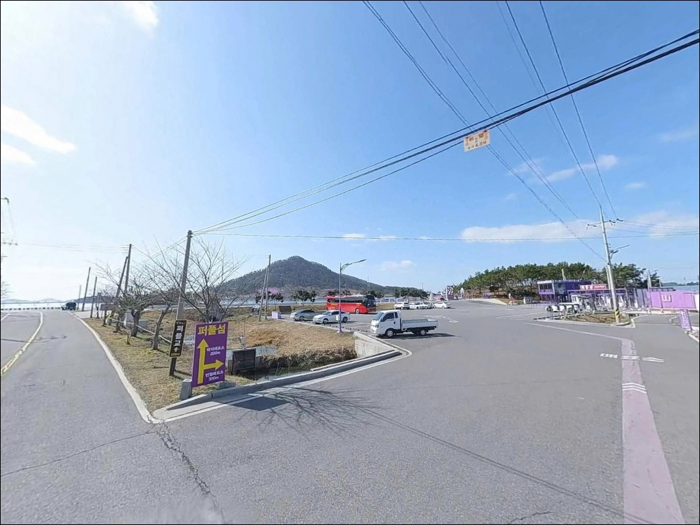

이 페이지에는 광고(제휴 링크 포함)가 있으며, 광고 링크를 통해 구매하면 운영자가 판매 수익 또는 수수료를 받을 수 있습니다. 포인트 사진: 카카오맵 스카이뷰·로드뷰. 이 페이지의 지도·사진 이미지는 카카오맵의 실제 서비스 이미지와 다를 수 있습니다.

퍼플섬
전남 신안군 안좌면 소곡리 799-3
퍼플섬을 낚시 포인트로 찾아가면서
물때를 확인하지 않으면,
선착장 발판까지 내려가도
갯벌만 드러나 있는 상황을 맞게 됩니다.
간조 시에는 수심이 거의 사라지는
내만형 갯벌 해역이라,
낚싯대를 내릴 수 있는 시간은
만조 전후 2~3시간으로 한정됩니다.
이 글은 퍼플섬 두리선착장 발판과
주변 해안의 지형 구조,
진입 여건, 낚시 방식 적합성에 집중합니다.
조황 단정이나 특정 어종 보장은
이 글의 범위에 포함되지 않습니다.
출조 전에 "안좌도 낚시 조황" 또는
"신안 반월도 낚시" 키워드로
최신 현장 정보를 먼저 확인하시기 바랍니다.

천사대교 개통 이후 퍼플섬은
차량으로 직접 진입 가능한 구조가 됐습니다.
무안광주고속도로 북무안 IC에서 출발해
천사대교를 건너면 암태도·팔금도를 경유해
안좌도로 이어지며,
소곡두리길을 따라가면
두리선착장 인근 공용주차장에 닿습니다.
소곡리에서 두리마을까지 이어지는 소곡두리길은
폭이 좁은 편도 1차로 농촌 도로입니다.
관광 성수기 주말에는
양방향 교행이 어려운 구간이 생기므로,
대형 캠핑 차량이나 루프박스를 달고 있는 경우라면
출발 전 위성지도로 진입로 폭을 확인하는 것이
기본 준비입니다.
주차는 두리매표소 인근 공용주차장을 이용합니다.
무료 주차가 가능한 공간이지만
성수기 주말에는 포화 상태가 되는 편입니다.
낚시 목적이라면 이른 아침 도착이 유리하며,
주차 후에는 도보로 두리선착장 발판까지
이동해 자리를 잡는 구조입니다.

퍼플섬은 관광지로 개발된 곳이라
낮 시간대 유동 인구가 많고
프라이버시 확보는 어려운 편입니다.
야간에는 관광객 이동이 줄어들지만,
퍼플교에 야간 경관 조명이 설치되어 있어
어두운 환경을 기대하기 어렵습니다.
두리 공용주차장을 차박 기점으로 삼는다면
성수기 주말을 피하는 것이 좋습니다.
관광객 차량과 낚시 차량이 뒤섞이는 구조라
조용한 체류 환경보다는
접근성 중심의 베이스캠프로
활용하는 것이 맞는 방식입니다.
외항 방향으로 개방된 해역 특성상
기상에 따라 바람 영향을 받습니다.
바람이 강한 날에는 주차장 쪽도
흔들림이 심한 편이므로,
기상청 예보와 함께 풍속을 확인하고
출발 시각을 조율하는 편이 안전합니다.

두리마을 반경 3km 이내에
식당이 일부 확인됩니다.
진번칼국수(안좌면 소곡두리길)는
바지락칼국수와 낙지칼국수를 운영하며,
퍼플섬 진입 동선에서 크게 벗어나지 않습니다.
박지마을식당(안좌면 박지도길)은
전복죽·낙지연포탕으로 알려진 곳입니다.
편의점이나 주유소는 안좌면사무소 인근
안좌도 중심부 방향으로 이동해야
이용 가능한 수준입니다.
낚시 채비와 얼음, 식수는
출발 전에 모두 준비하고 떠나는 것이
퍼플섬 특유의 섬 낚시 준비 방식입니다.

퍼플섬 주변 해역은
서해 남도권 특유의 조석 간만 차가 크게 작용하는 구조입니다.
두리선착장 발판 앞쪽은 간조 시
갯벌이 넓게 드러나는 지형이라,
만조 전후 2~3시간이 낚시 가능한 시간대의 전부입니다.
바다타임에서 소곡리 기준 물때를 먼저 확인하고
출발 시각을 역산하는 것이 기본 전략입니다.
퍼플섬은 입장료가 있는 유료 관광지입니다.
반월도·박지도 섬 내부로 진입 시
매표소를 거쳐야 하며,
운영 시간(하절기 09:00~18:00, 동절기 09:00~17:00,
수요일 휴무) 외에는 섬 안으로의 접근에
제한이 생기는 구조입니다.
두리선착장 발판은 매표 구역 바깥에 해당하므로
별도 입장료 없이 낚시가 가능할 가능성이 있으나,
현장 안내판을 반드시 먼저 확인하시기 바랍니다.
신안군은 시기별로 읍·면 단위 낚시 금지 구역을
운영하는 경우가 있습니다.
현장 안내판 확인을 출조 첫 번째 순서로 삼아야 합니다.
구명조끼는 갯벌이 드러난 해역에서 특히 필수이며,
야간 입장 시 헤드랜턴과
미끄럼 방지 신발도 기본 장비입니다.

두리선착장 발판 앞쪽은
갯벌과 완경사 해안이 혼합된 지형입니다.
섬과 섬 사이 수로 구조가 조류 소통을 만들어내며,
만조 시에는 수심이 확보되는 구간이 생깁니다.
수로가 지나는 방향으로 채비를 멀리 보내면
바닥층 어종을 노릴 수 있는 조건이 만들어집니다.
반월도·박지도 외곽 해안은
갯바위성 지형이 일부 있는 구간이 포함됩니다.
섬 둘레길을 따라 이동하다 보면
조류 흐름이 살아 있는 외항 쪽 지점을
찾아볼 수 있습니다.
이 구간에서는 찌낚시나
소형 루어 라이트게임이 어울리는 지형입니다.
신안 다도해 해역은 갑오징어와 주꾸미 자원이
풍부한 곳으로,
퍼플섬 인근 수로도 이 범주에 들어갑니다.
에깅 또는 왁다리 채비를 시즌에 따라
기대해볼 수 있는 해역입니다.
다만 현장에서 최신 조황을 검색한 뒤
채비를 결정하는 것이 손실을 줄이는 방법입니다.
출조 전에 "신안 반월도 낚시" 또는
"안좌도 소곡리 조황" 키워드로
최신 정보를 꼭 확인하시기 바랍니다.

두리선착장 발판에서 가장 현실적인 방식은
원투낚시입니다.
갯벌과 모래 바닥이 혼합된 구간에
봉돌을 멀리 던져
바닥층 어종을 탐색하는 스타일이 맞습니다.
붕장어, 숭어, 감성돔을
기대해볼 수 있는 해역이며,
봄부터 가을(4월~10월)이 서해 다도해권
전반적인 활성 시기에 해당합니다.
민장대 찌낚시는 만조 시
발밑 수심이 확보되는 구간에서
숭어나 볼락을 노려볼 수 있습니다.
선착장 발판 내항 쪽은
잔잔한 수면 조건이 유지될 때
찌낚시 발판으로 활용하기에 적합한 구조입니다.
에깅은 반월도·박지도 외곽
조류 소통이 있는 수로 방향을 노리는 방식으로 접근합니다.
신안 다도해권은 갑오징어 자원이 서해에서
가장 풍부한 해역 중 하나입니다.
시즌(4월~11월) 안에 물때를 맞추면
에깅 채비로 반응을 기대해볼 수 있습니다.

퍼플섬 낚시 여건이 기대에 못 미칠 때는
안좌도 본섬 해안선의 소규모 방파제나
선착장을 우선 대안으로 삼습니다.
관광지 제약 없이 낚시 발판으로
바로 접근 가능한 구조이고,
수심 확보 측면에서도 퍼플섬보다 유리한 곳이
많은 편입니다.
안좌도와 다리로 연결된 팔금도 방파제도
유력한 플랜 B입니다.
신안 다도해 낚시권으로 같은 해역에 묶이는 곳으로,
감성돔과 볼락, 갑오징어 시즌에
기대를 걸어볼 수 있는 구조를 가진 곳들이
여럿 있습니다.
출발 전 "팔금도 방파제 낚시" 또는
"안좌도 낚시 조황"으로 검색해
현재 반응이 있는 방파제를 먼저 추린 뒤
이동 동선을 잡는 것이 효율적입니다.
안좌도 남단의 복호항도
수심 확보 측면에서 참고할 만한 대안입니다.
퍼플섬보다 낚시 포인트로서
독립적인 구조를 갖춘 항구이며,
퍼플섬을 먼저 탐색하고
복호항으로 이동하는 동선이
이 권역에서 하루를 채우는
현실적인 방법입니다.

원투낚시나 에깅을 즐기는 낚시인이라면
만조 타이밍을 정확히 맞춘 퍼플섬이
생각보다 조용한 한 시간을 줄 수 있는 곳입니다.
관광 성수기를 피해 이른 아침 만조가 맞는 날
찾아간다면, 낚시 인파가 없는 발판에서
신안 다도해 갯벌 해역을
천천히 탐색해볼 수 있습니다.
반면 물때를 놓치거나 낚시 전용 포인트를
기대하고 간다면 이 포인트는 기대에 못 미칩니다.
관광지 혼잡이 있는 낮 시간대,
간조가 겹치는 날,
이 두 가지가 겹치는 상황에서
퍼플섬 낚시는 사실상 불가능한 구조입니다.
물때 확인, 성수기 회피, 자급 준비,
이 세 가지를 갖추고 가는 낚시인에게만
퍼플섬이 낚시 포인트로 기능합니다.
보라빛 교각 아래 선착장 발판에 자리를 잡고
신안 다도해 조류 위에 채비를 내리는 경험은,
낚시와 차박을 동시에 즐기는 사람에게
한 번쯤 찾아볼 이유가 되는 곳입니다.